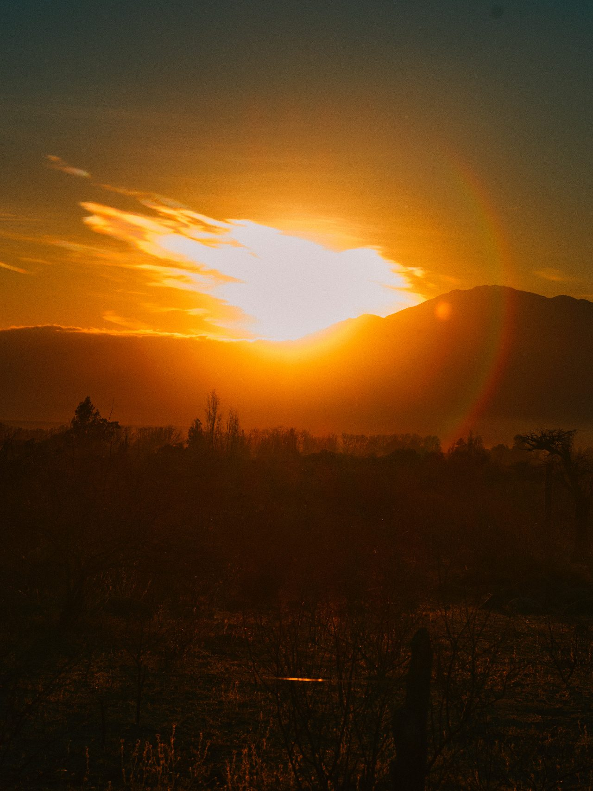
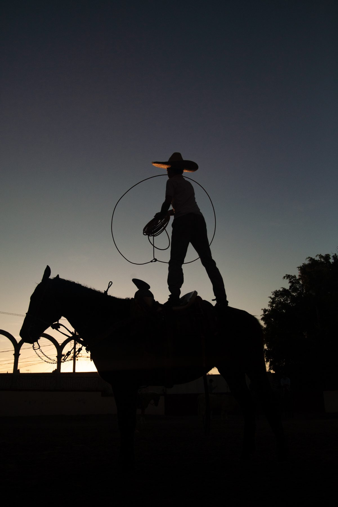
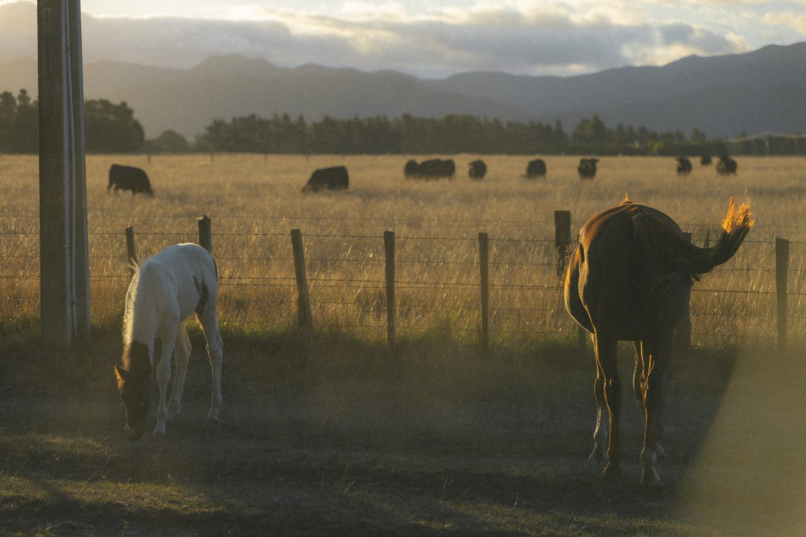
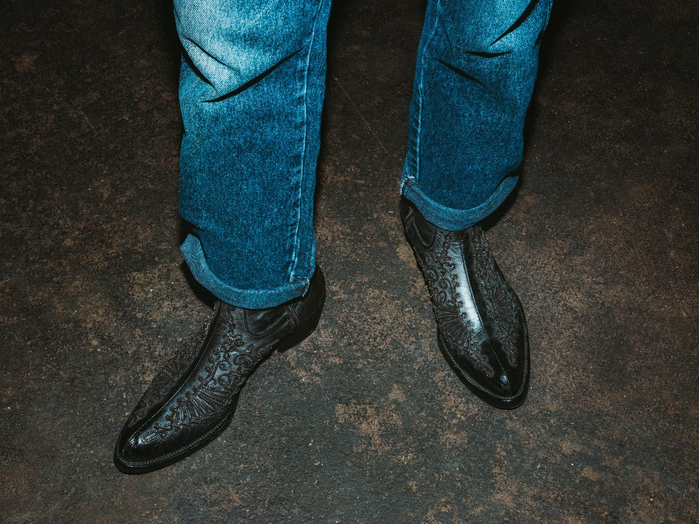
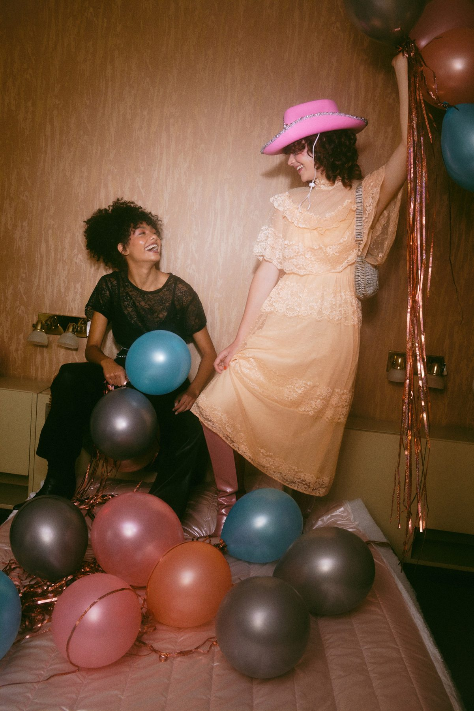
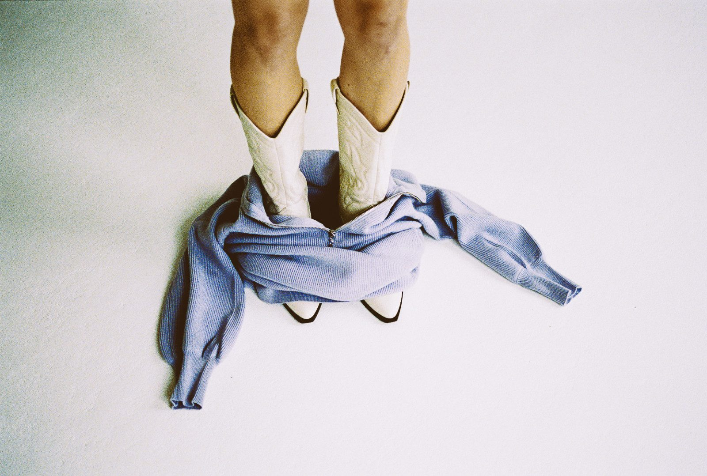
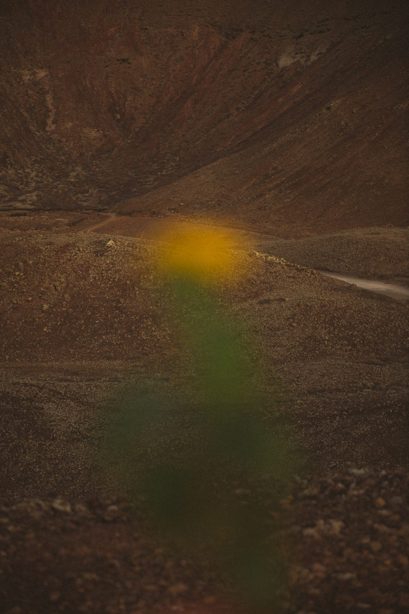
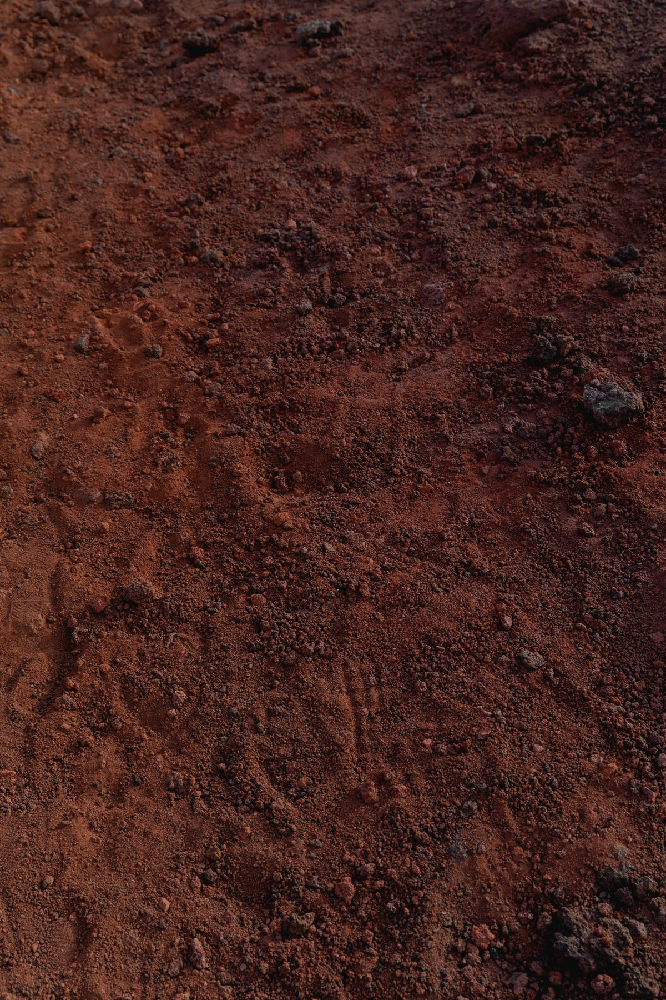
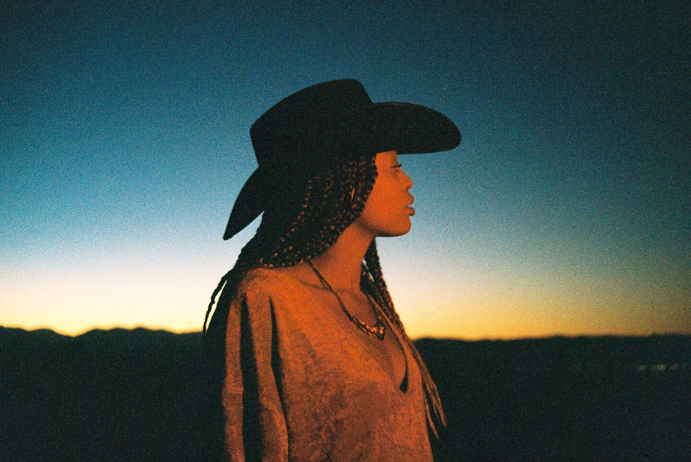
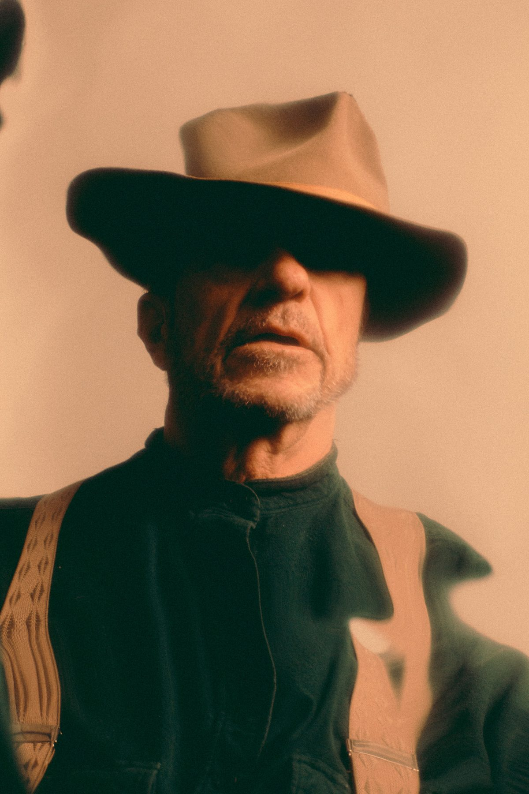

Selected work — 2019–2026
A documentary practice following the roads, ranches and rodeo circuits of the Americas.

Bandits Salta, Argentina
Charros Jalisco, Mexico Back Forty
Private Ranch
Back Forty
Private Ranch

Off Grid Lewis Ferris Deep End Studio
Dive Bar Agustin Farias
Static Ivan Resnik Hang In There Cecilia Di Paolo
Soft Landing Chris Abatzis
Tones Chris Abatzis
Another Planet Field Study
Silhouette Grant Spanier
Kin Nick Fancher